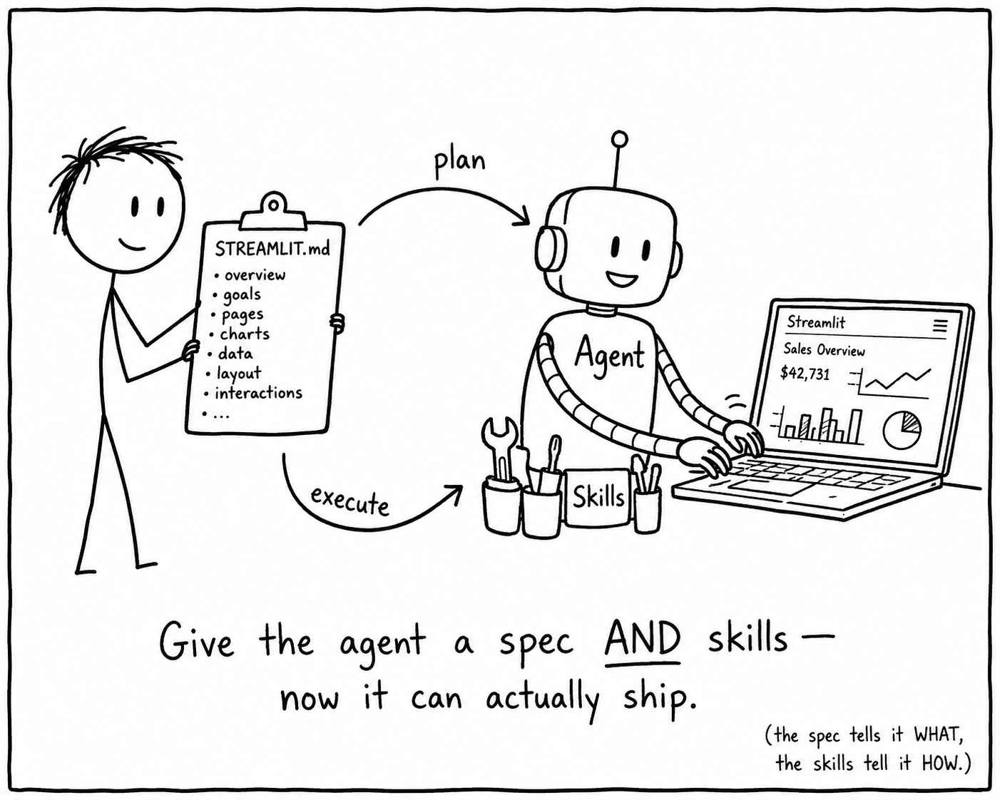

Spec-Driven Development with
STREAMLIT.md
Using Markdown specs to generate better Streamlit apps with LLMs
What is Vibe Coding?
- You describe an app in chat, the LLM produces code, you ship the diff
- Fast for prototypes, painful past day one
- Knowledge lives in the chat history, not the repo
| Strength | Weakness |
|---|---|
| Zero setup, instant gratification | Each new chat starts from zero, prior decisions are forgotten |
| Great for one-off scripts | Successive edits drift from intent and contradict prior decisions |
| Low barrier to entry | Context is stored in the chat and doesn't transfer to teammates or new agents |
Why Vibes Aren't Enough
- Several back and forth iterations to get on track
- No guarantee the app starts in the right direction
- Drift, rework, and surprise UI choices
- Context gets lost between turns
| Approach | Result |
|---|---|
| Ad-hoc chat prompts | Inconsistent first iteration, lots of cleanup |
| Written spec first | Aligned scaffold, fewer surprises |
From Vibes to Specs
- The industry is converging on three modes of LLM-assisted coding
- Each adds more structure, less guesswork
| Mode | What you give the LLM | What you get back |
|---|---|---|
| Vibe coding | Chat messages | Code that may or may not match intent |
| Spec-driven dev | A written spec like STREAMLIT.md | Code that implements the spec |
| Vibe engineering / Agentic coding | Spec + repo rules + tools the agent can call | An autonomous loop you review |
Why Spec-driven Wins
- Vibe coding is improvisation, spec-driven dev is composition
- The spec is the prompt, the repo, and the contract, all at once
| Question | Vibe coding | Spec-driven dev |
|---|---|---|
| What does this app do? | Re-read the chat | Read STREAMLIT.md |
| How do I add a page? | Re-prompt from scratch | Edit Pages section, regenerate |
| How do two agents agree? | They don't | They share the same spec |
| How do I review a change? | Diff the code, guess the intent | Diff the spec, then the code |
Plan first, prompt once
- Capture intent up front in a single document
- Front-loaded context beats incremental clarification
- One prompt yields a coherent scaffold
| Section | What it captures |
|---|---|
| Purpose | App goal and target user |
| Pages | Layout, navigation, structure |
| Data | Sources, schemas, queries |
| Interactions | Widgets and state, declared per page |
| Styling | Theme, components, branding |
| Deployment | Target environment, secrets |
Markdown is the new source of truth
- Originally written for humans on GitHub
- Now also serves as primary context for LLMs
- Every major coding agent reads convention files from your repo
- Plain text, versionable, reviewable, portable
| Reader | Purpose |
|---|---|
| Humans | Understand and use the project |
| LLM agents | Ground responses, follow rules, reuse skills |
Meet the Markdown Family
- Each file gives the LLM a different slice of context
- Roles split by audience (humans vs agents) and concern (what, how, look)
- You can mix and match, all live in the repo
| File | Role | Audience |
|---|---|---|
README.md | What the project does, how to use | Humans |
AGENTS.md | Rules and constraints in this directory | Any LLM agent |
CLAUDE.md | Project memory and instructions | Claude |
SKILL.md | Reusable skill definitions | Agent workflows |
DESIGN.md | Frontend design patterns (Google) | LLM |
Introducing STREAMLIT.md
- An input plan and spec, fed to the LLM
- Goal: generate a strong first iteration of a Streamlit app
- Lives next to the code, evolves with the project
- Reusable across agents and sessions
| Phase | Artifact |
|---|---|
| Plan | STREAMLIT.md (you write this with the LLM) |
| Build | app.py and supporting files (LLM generates) |
| Iterate | Edit STREAMLIT.md, regenerate or refine |
What STREAMLIT.md looks like
- A structured Markdown file the LLM reads to generate the app
- Sections cover purpose, pages, data, widgets, theme, deployment
CONTENTS OF STREAMLIT.md
# STREAMLIT.md
## Purpose
A dashboard for sales reps to track quarterly pipeline.
## Pages
- Overview: KPI cards, pipeline by stage
- Inputs: date range, region multiselect
- Persists: active filters
- Deals: filterable table with drill-down
- Persists: selected deal across reruns
## Data
- Source: Snowflake, table SALES.PIPELINE
- Refresh: cached 5 minutes
## Theme
- Primary color #29B5E8
- Dark mode default
## Deployment
- Streamlit in Snowflake
- Warehouse: COMPUTE_WH
STREAMLIT.md: Extended Sections
- The minimal core gets you started, larger apps add more
- Pick what fits, skip what does not
| Section | Purpose |
|---|---|
## Personas | Primary and secondary users |
## Auth & Access | Login, roles, row-level filtering |
## Secrets | Keys, env vars, sources |
## Dependencies | Python packages, pinned versions |
## File Structure | app.py, pages/, components/ |
## Components | Reusable widgets, shared modules |
## Performance | Caching, fragments, scale |
## Error Handling | Fallback UI, retries, empty states |
## Observability | Logging, telemetry, metrics |
## Out of Scope | Explicit non-goals |
## Open Questions | Decisions deferred to later |
## Changelog | Spec version history |
Before vs After
- Same goal, two paths: ad-hoc chat versus a written spec
- Spec-first front-loads decisions the agent would otherwise guess
| Step | Without spec | With STREAMLIT.md |
|---|---|---|
| 1 | "Build me a sales dashboard" | Interview produces full spec |
| 2 | Agent picks random layout | Layout matches stated pages |
| 3 | You ask for theme tweaks | Theme already specified |
| 4 | Five rounds of corrections | One iteration to refine |
| 5 | Inconsistent state handling | State keys defined up front |
How to create STREAMLIT.md
- One question at a time, until it has enough context
- Then it writes a comprehensive STREAMLIT.md for review
WITH TEMPLATE STREAMLIT.md
Use repo/STREAMLIT.md as the template.
Interview me one section at a time and
fill in every <placeholder> in the file.
Follow the guidance notes in each section.
Do not skip ahead. Do not invent details.
When every placeholder is filled, save the
result as STREAMLIT.md for my review.
WITHOUT TEMPLATE STREAMLIT.md
Help me create a STREAMLIT.md file for my app.
Interview me to gather all the context you need:
- App purpose and primary user
- Pages and navigation
- Data sources, schemas, queries
- Key widgets and state
- Styling and theme
- Deployment target
Ask one question at a time. When done,
write STREAMLIT.md as a complete spec.
From Spec to App
- Hand the finished spec to your coding agent in one prompt
- Iterate by editing the spec, not the chat history
PROMPT TO LLM
"Read STREAMLIT.md and build the app."| Step | Action |
|---|---|
| 1 | Interview produces STREAMLIT.md |
| 2 | Review and edit the spec |
| 3 | LLM generates app.py from the spec |
| 4 | Refine spec, regenerate as needed |
STREAMLIT.md vs AGENTS.md
- Different files, different jobs, often used together
- STREAMLIT.md is the app spec
- AGENTS.md is the repo rulebook
| File | Scope | Example content |
|---|---|---|
STREAMLIT.md | This app | Pages, widgets, theme, deployment |
AGENTS.md | The repo | "Use uv, not pip", "Never commit secrets" |
README.md | Humans | What the project does, how to run |
Enforcing the Changelog
- STREAMLIT.md says what to build, AGENTS.md says how the agent behaves
- Codify the rule once, every agent that reads the repo follows it
## Editing STREAMLIT.md
- Treat STREAMLIT.md as the source of truth for app behavior.
- When you change any section, append an entry to ## Changelog:
- Date (YYYY-MM-DD), section touched, one-line summary.
- Never silently edit. If unclear, ask before changing.
- If STREAMLIT.md and code disagree, update code to match the
spec, not the other way around.
Iterating on the Spec
- The spec is a living document, not a one-shot artifact
- Edit STREAMLIT.md, then ask the agent to apply the diff
- Keep a Changelog section for traceability
PROMPT TO LLM
"I updated STREAMLIT.md (added a Filters section).
Update app.py to match, do not change unrelated code."| Change type | Action |
|---|---|
| Add page | Add to Pages section, regenerate that page |
| Theme tweak | Edit Theme section, restyle only |
| New data source | Update Data section, refactor loaders |
When Not to Use a Spec
- Spec-driven development has overhead, pick the right tool
- Match the approach to the app's lifespan and complexity
| Use a spec when | Skip the spec when |
|---|---|
| App will be maintained over time | Throwaway one-off script |
| Multiple pages or non-trivial state | Single chart, single dataframe |
| Team collaboration on the build | Solo 10-minute prototype |
| You want repeatable regeneration | You will hand-write everything |
Why Spec-driven Development Works
- Front-loaded context beats incremental clarification
- Written specs are reviewable by humans
- Versionable, lives in the repo next to the code
- Reusable across agents and sessions
| Benefit | Impact |
|---|---|
| Alignment | First iteration matches intent |
| Reviewability | Catch issues before code is written |
| Portability | Same spec, different agents |
| Maintenance | Spec is the single source of truth |
Takeaway
- Treat Markdown as a first-class interface to your LLM
- Write the plan, ship the app
- STREAMLIT.md joins the family of agent-readable convention files
| Do | Avoid |
|---|---|
| Spec, then prompt | Ad-hoc chat without a plan |
| Edit the spec to iterate | Endless back and forth in chat |
| Commit STREAMLIT.md | Throwaway prompts |
What's Next: Agentic Coding
- STREAMLIT.md gives the agent a plan
- Agent Skills gives it capabilities — reusable, packaged know-how
- STREAMLIT.md Spec + Skills = an agent that can plan and execute
